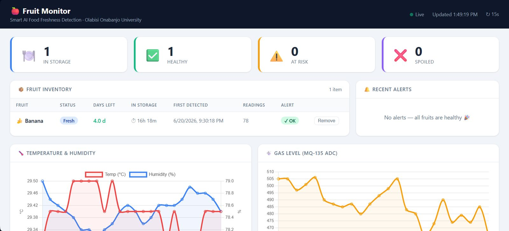

01 / 2026
IoT and Machine Learning
Smart Fruit Spoilage and Freshness Detection
An IoT system that reads environmental sensors around stored fruit and uses a machine learning model to predict freshness and shelf life in real time.
View project